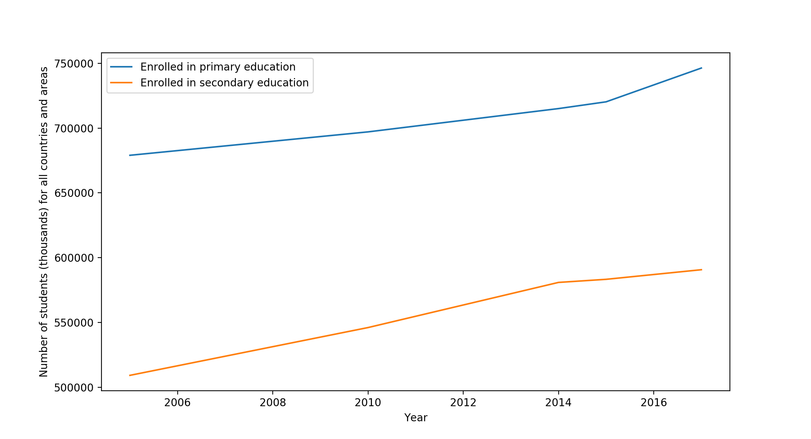

I used data from the UN website (found here) to create line graphs which plot statistics for different sets of characteristics for homework.
For this graph, I used the UN CSV file which details education at the primary, secondary and tertiary levels.
I chose to focus on education at the primary and secondary levels for all countries and areas to highlight worldwide literacy levels over time.
For this graph, I used the UN CSV file which details GDP and GDP per capita.
I looked for GDP per capita in US dollars for all countries and areas over a wide span of decades.